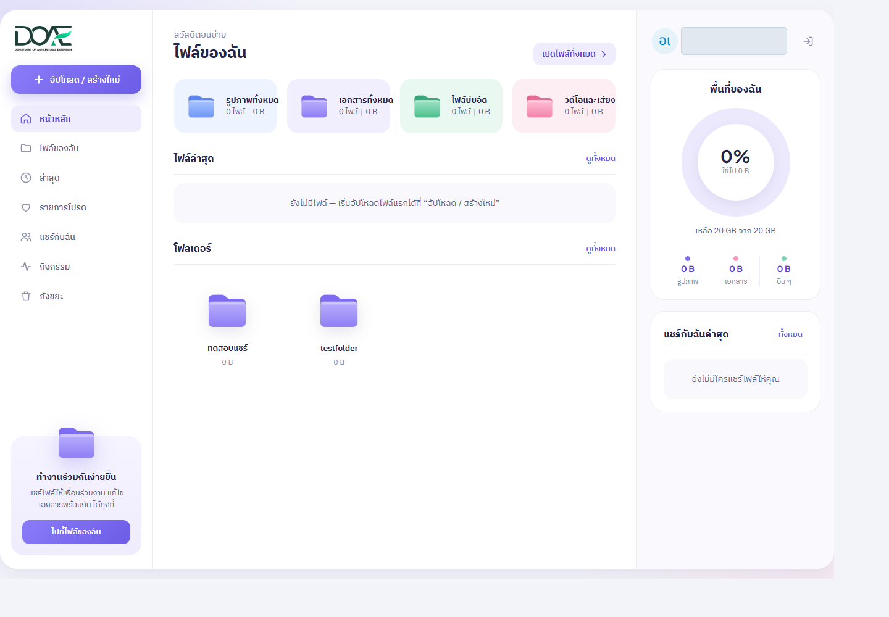
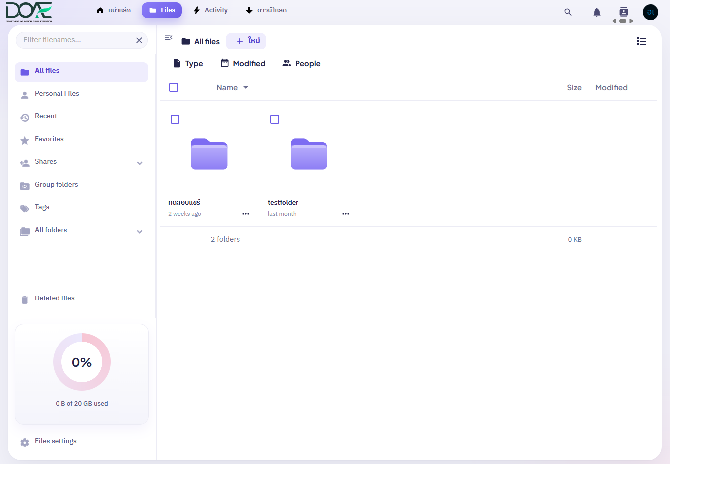
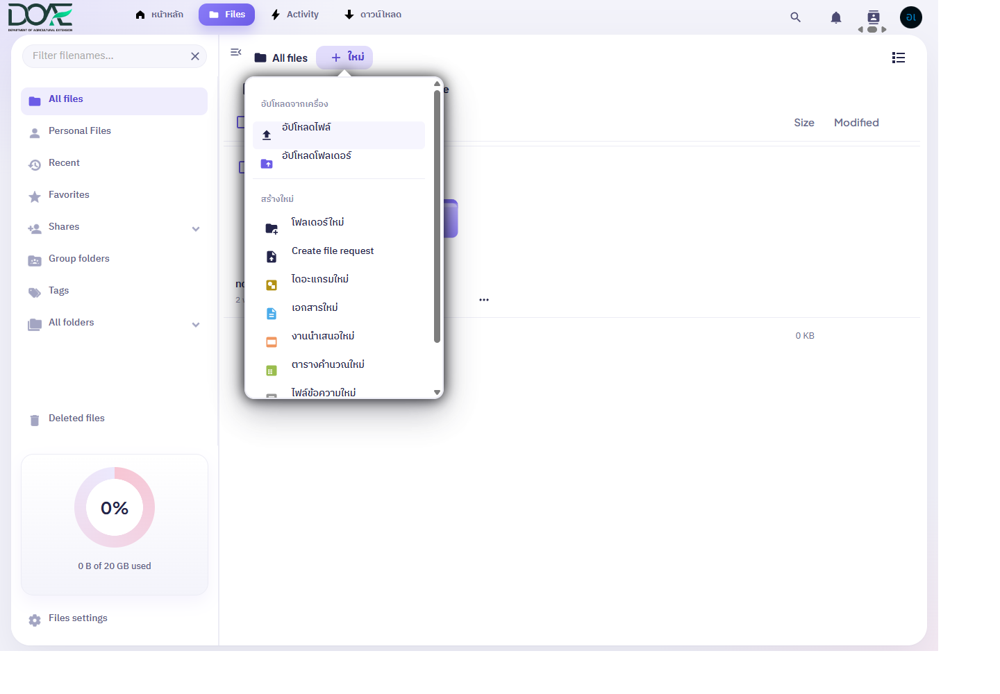
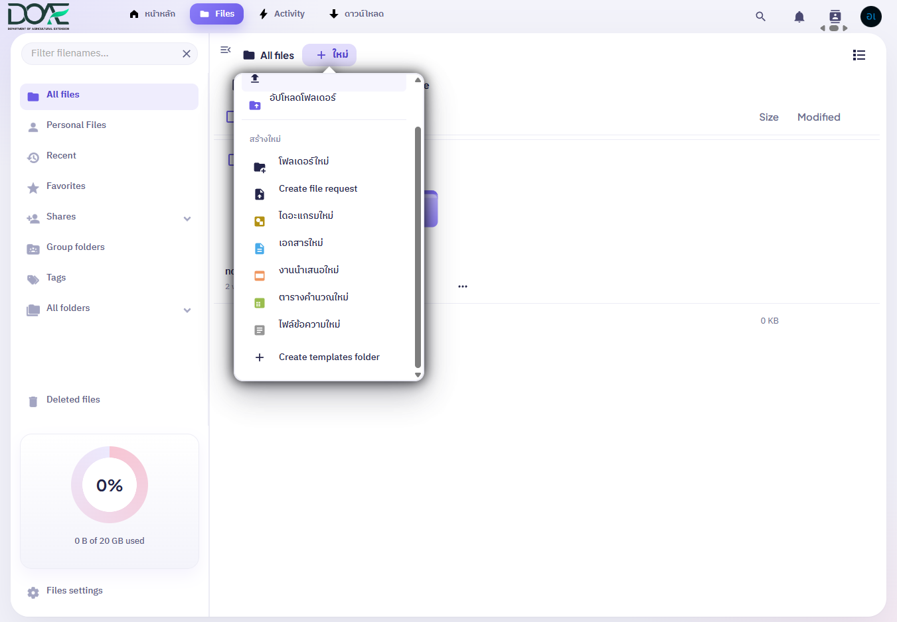
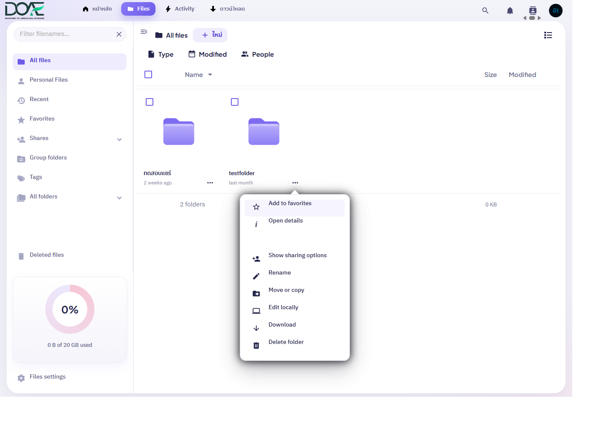
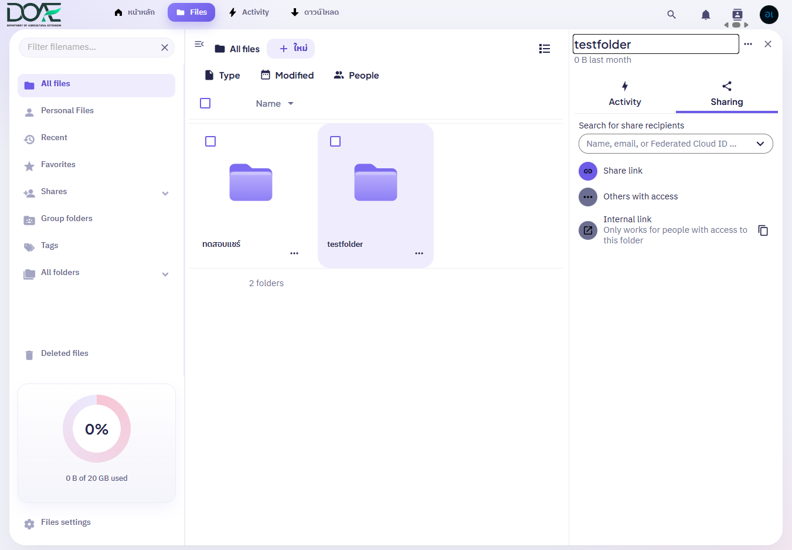
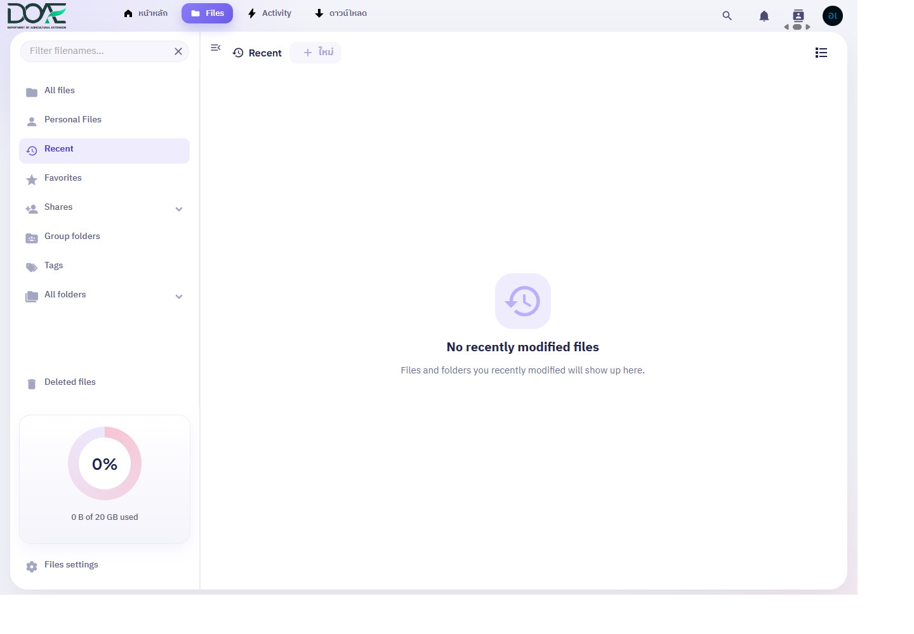
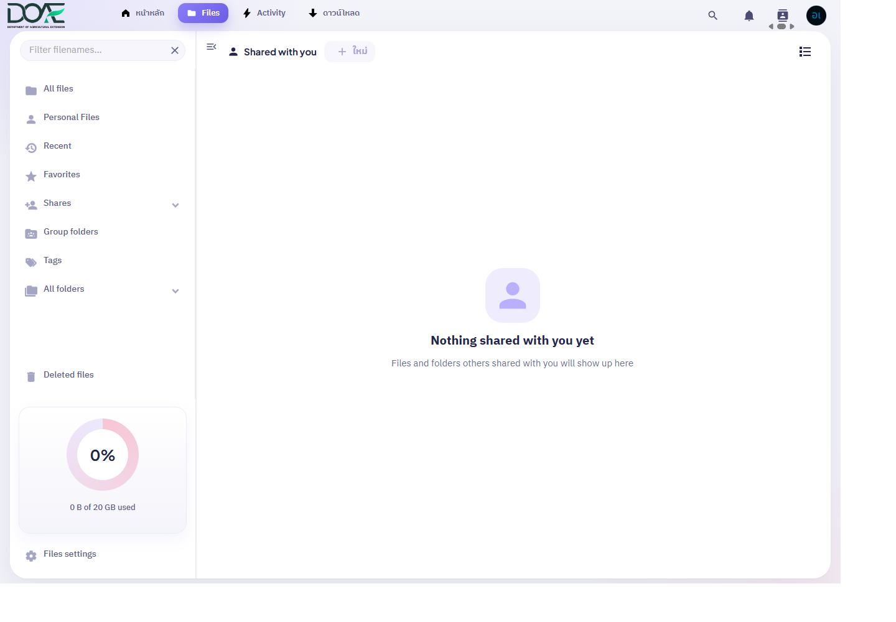
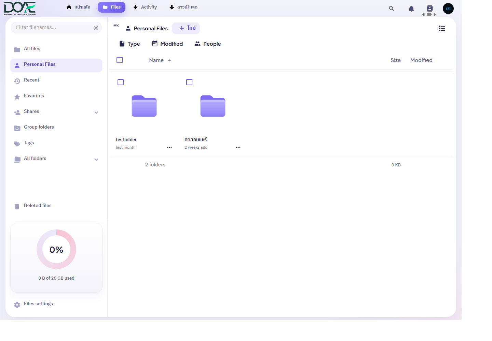
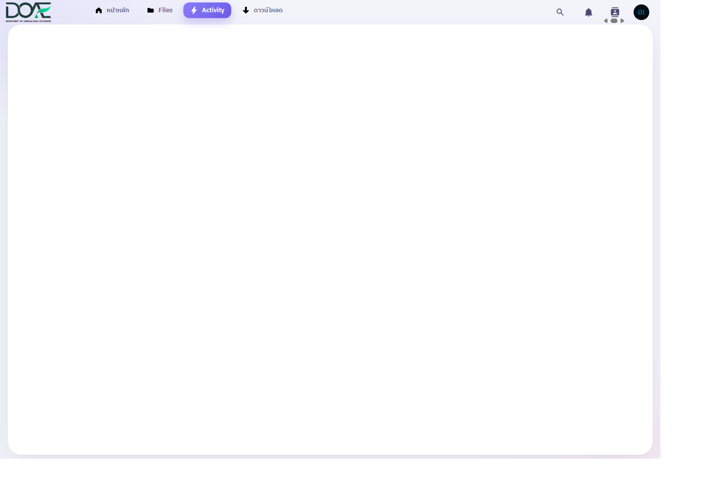

ขอบเขตและข้อสังเกต
ข้อมูลขณะสำรวจ: พื้นที่ 20 GB ใช้ไป 0 B มีโฟลเดอร์ 2 รายการ และยังไม่มีรายการใน ล่าสุด รายการโปรด หรือ แชร์กับฉัน
ภาพหน้าจอได้ปิดบังชื่อบัญชี อีเมล และชื่อโฟลเดอร์ส่วนบุคคลแล้ว เพื่อความปลอดภัยด้านข้อมูลส่วนบุคคล (PDPA)
การสำรวจครั้งนี้ไม่ได้เปลี่ยนแปลงไฟล์หรือการแชร์
คู่มือนี้อ้างอิงหน้าจอที่พบขณะสำรวจ บางหน้าไม่มีรายการ จึงอธิบายจากชื่อเมนูที่เห็น
1 หน้าแรกและเมนู
หน้าแรกแสดงไฟล์ล่าสุด โฟลเดอร์ และเมนูหลัก

- 1 อัปโหลด / สร้างใหม่: เริ่มเพิ่มไฟล์หรือสร้างรายการใหม่
- 2 ไฟล์ของฉัน: เปิดพื้นที่จัดเก็บไฟล์ทั้งหมด
- 3 ล่าสุด: ดูรายการที่เพิ่งแก้ไข
- 4 แชร์กับฉัน: เปิดรายการที่ผู้อื่นแชร์มาให้
- 5 หมวดไฟล์: สรุปรูปภาพ เอกสาร ไฟล์บีบอัด และวิดีโอ/เสียง
- 6 ไฟล์ล่าสุด: ทางลัดไปยังรายการที่เพิ่งใช้งาน
- 7 โฟลเดอร์: เปิดโฟลเดอร์จากหน้าแรก
แถบด้านบนของแอป Files ยังมีทางไปหน้าหลัก, Files, Activity และดาวน์โหลด รวมถึงปุ่มค้นหา การแจ้งเตือน รายชื่อผู้ติดต่อ และเมนูบัญชีผู้ใช้
2 เปิดดูไฟล์
เลือก “ไฟล์ของฉัน” แล้วเปิด All files เพื่อดูไฟล์ทั้งหมด คลิกชื่อโฟลเดอร์เพื่อเปิดดูไฟล์ข้างใน

- 1 ใหม่: เปิดเมนูอัปโหลดและสร้างรายการ
- 2 ตัวกรอง: กรองตาม Type, Modified หรือ People
- 3–4 โฟลเดอร์: เปิดรายการด้วยการคลิกชื่อหรือไอคอน
- 5 ปุ่มสลับมุมมอง: เปลี่ยนระหว่างมุมมองไอคอนกับรายการ
ในมุมมองรายการ ดูชื่อไฟล์ ขนาด และวันที่แก้ไขได้ คลิกหัวคอลัมน์เพื่อเรียงรายการ ใช้ช่องค้นหาเพื่อหาไฟล์
3 เพิ่มไฟล์หรือสร้างรายการ
เปิดโฟลเดอร์ที่ต้องการเก็บไฟล์ กด “ใหม่” แล้วเลือกว่าจะอัปโหลดหรือสร้างรายการ


- 1 ปุ่ม “ใหม่” เปิดเมนูคำสั่ง
- 2 อัปโหลดไฟล์จากเครื่อง
- 3 อัปโหลดโฟลเดอร์จากเครื่อง
- 4 โฟลเดอร์ใหม่
- 5 สร้างไดอะแกรม เอกสาร งานนำเสนอ ตารางคำนวณ หรือไฟล์ข้อความ
- เปิด Files และเข้าโฟลเดอร์ปลายทาง
- กด “ใหม่” แล้วเลือก “อัปโหลดไฟล์” หรือ “อัปโหลดโฟลเดอร์”
- เลือกไฟล์/โฟลเดอร์จากหน้าต่างเลือกไฟล์ของเครื่อง
- รอให้แถบสถานะการอัปโหลดเสร็จ แล้วตรวจชื่อและตำแหน่งในรายการ
กด Choose File เพื่อเลือกไฟล์จากเครื่อง หากสร้างเอกสารใหม่ ให้เลือกชนิดและตั้งชื่อ
4 เปลี่ยนชื่อ ย้าย และดาวน์โหลด
ที่แถวไฟล์หรือโฟลเดอร์ กดปุ่ม Actions (จุดสามจุด) เพื่อเปิดคำสั่งของรายการนั้น เมนูที่ตรวจพบมี Add to favorites, Open details, Show sharing options, Rename, Move or copy, Edit locally, Download และ Delete folder

แนวทางใช้เมนู Actions
- Add to favorites: ปักหมุดรายการไว้ในหน้า Favorites
- Open details: ดูรายละเอียดรายการ
- Show sharing options: เปิดแผงจัดการการแชร์
- Rename: เปลี่ยนชื่อรายการ
- Move or copy: ย้ายหรือทำสำเนาไปยังตำแหน่งอื่น
- Edit locally: เปิดแก้ไขผ่านแอปที่เชื่อมต่อบนเครื่อง หากมีการตั้งค่า
- Download: ดาวน์โหลดไฟล์หรือโฟลเดอร์
- Delete folder: ลบโฟลเดอร์ ซึ่งอาจทำให้รายการเข้าไปอยู่ในถังขยะ
ก่อนย้ายหรือคัดลอก ให้ตรวจโฟลเดอร์ปลายทางและชื่อรายการอีกครั้ง ก่อนลบให้ตรวจว่ารายการนั้นไม่ถูกใช้งานร่วมกับผู้อื่น
5 แชร์ไฟล์
กดจุดสามจุดข้างไฟล์ เลือก Show sharing options เพื่อเพิ่มผู้รับ สร้างลิงก์ หรือดูว่าใครเข้าถึงไฟล์ได้

- 1 Search for share recipients: ค้นหาผู้รับตามบัญชีที่ระบบอนุญาต
- 2 Share link: เริ่มสร้างลิงก์แชร์เมื่อจำเป็น
- 3 Others with access: ตรวจรายชื่อผู้ที่เข้าถึงรายการได้
- 4 Internal link: ลิงก์ภายในที่ใช้ได้เฉพาะผู้มีสิทธิ์กับโฟลเดอร์
- เลือก Share options ข้างไฟล์ที่ต้องการแชร์
- เลือกคนที่จะรับไฟล์ หรือสร้างลิงก์
- กำหนดว่าจะให้ผู้รับดูหรือแก้ไขได้ และตั้งวันหมดอายุหรือรหัสผ่าน หากมีตัวเลือก
- กดยืนยัน แล้วตรวจรายชื่อผู้ที่เข้าถึงไฟล์ได้
ก่อนส่งลิงก์ ตรวจชื่อผู้รับและสิทธิ์ให้ถูกต้อง อย่าใช้ลิงก์สาธารณะกับข้อมูลสำคัญ
6 หาไฟล์ล่าสุดและไฟล์ที่แชร์
ล่าสุด

ดูล่าสุด: เปิดเมนู “ล่าสุด” เพื่อหาไฟล์ที่เพิ่งแก้ไข
รายการโปรด
เพิ่มไฟล์ไว้ใน “รายการโปรด” จากเมนู Actions แล้วกลับมาหาได้ที่หน้านี้
แชร์กับฉัน

หาไฟล์ที่ผู้อื่นแชร์ให้ที่หน้านี้ หากไม่พบ ให้ตรวจบัญชีที่ใช้ลงชื่อเข้าใช้
Personal Files

Personal Files แสดงไฟล์ส่วนบุคคล ส่วน All files แสดงไฟล์ทั้งหมด
7 ดูประวัติและถังขยะ
กิจกรรม

ดูประวัติการสร้างหรือแก้ไขไฟล์ได้ที่ “กิจกรรม”
ถังขยะ

เปิด “ถังขยะ” เพื่อดูไฟล์ที่ลบ หากต้องการนำกลับ ให้เลือกรายการแล้วกดกู้คืน ตรวจชื่อไฟล์ก่อนลบถาวร เพราะอาจนำกลับไม่ได้
ก่อนแชร์หรือย้ายไฟล์
- ตรวจชื่อไฟล์และโฟลเดอร์ปลายทาง
- ตรวจว่ากำลังใช้บัญชี DOAE ที่ถูกต้อง
- ก่อนแชร์ ตรวจผู้รับและระดับสิทธิ์
- สำหรับลิงก์ ให้ใช้เท่าที่จำเป็นและกำหนดข้อจำกัดตามตัวเลือกที่มี
- หลังทำรายการ ตรวจตำแหน่งใหม่ รายชื่อผู้เข้าถึง หรือถังขยะตามชนิดงาน
คู่มือนี้จัดทำจากหน้าจอที่สำรวจ ณ วันที่ระบุ เมนูหรือสิทธิ์การใช้งานอาจเปลี่ยนตามการอัปเดตระบบและสิทธิ์ของบัญชี
8 ดาวน์โหลดแอป
เมนู “ดาวน์โหลด” มีแอปสำหรับคอมพิวเตอร์ Windows และมือถือ Android กับ iPhone/iPad

ในหน้าดาวน์โหลด เลือกปุ่มของแพลตฟอร์มที่ตรงกับอุปกรณ์เพื่อไปยังหน้าดาวน์โหลดหรือร้านแอปที่ระบบระบุ คู่มือนี้ไม่ได้เริ่มดาวน์โหลดหรือติดตั้งแอป